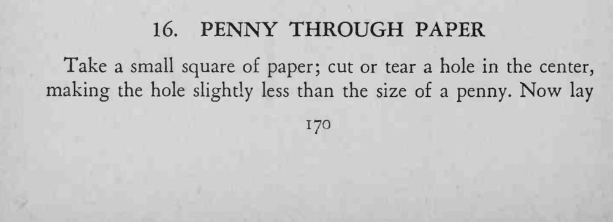
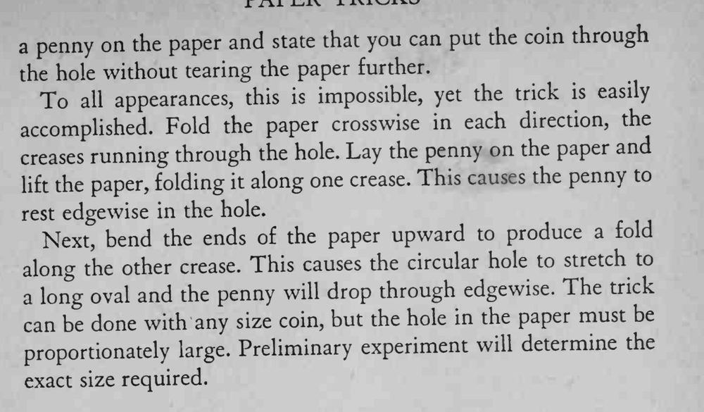

纸上剪一个比硬币略小的洞，硬币却能不撕破纸就穿过去。
洞要比硬币略小又能拉得开，先用同尺寸硬币试准。


Take a small square of paper; cut or tear a hole in the center, making the hole slightly less than the size of a penny. Now lay penny on the paper and state that you can put the coin through the hole without tearing the paper further. To all appearances, this is impossible, yet the trick is easily accomplished. Fold the paper crosswise in each direction, the running through the hole. Lay the penny on the paper and creases the paper, folding it along one crease. This causes the penny to lift rest edgewise in the hole. Next, bend the ends of the paper upward to produce a fold along the other crease. This causes the circular hole to stretch to a long oval and the penny will drop through edgewise. The trick can be done with any size coin, but the hole in the paper must be proportionately large. Preliminary experiment will determine the exact size required.